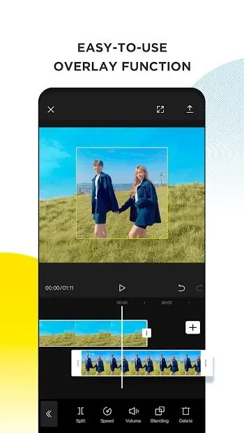
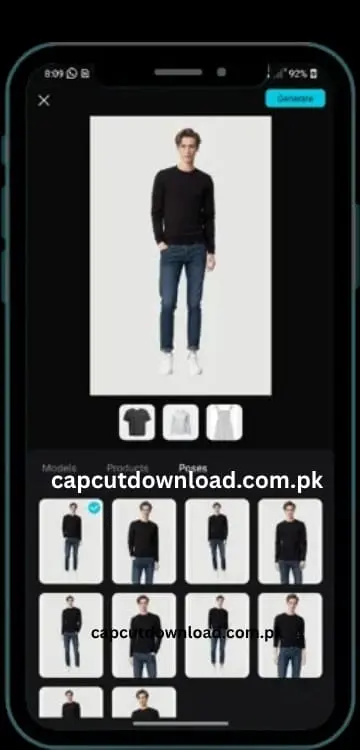
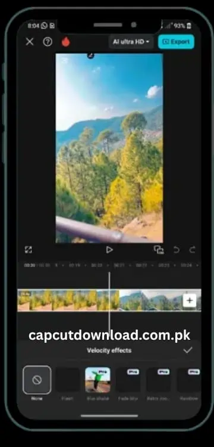

1. Deep-Dive Feature Architecture of CapCut Video Editor
CapCut's success stems from its multi-tier feature architecture, which segments editing workflows into basic mechanical operations, advanced timeline manipulation, and intelligent automated tasks. This design accommodates a wide spectrum of user experience levels while maintaining high rendering efficiency on mobile chipsets.
Basic Video Editing Mechanics
At its foundational tier, CapCut handles non-destructive asset trimming, clip splitting, and timeline sequence merging with zero performance lag.
- Precision Splitting & Trimming: Frame-accurate slicing, letting creators isolate specific visual regions and remove unwanted frames.
- Freeze Frames: Highlight pivotal moments by stopping a single frame within a video asset and extending it with dynamic zoom in/out effects.
- Transition Engine: Dynamic directional blurs, glitches, and dissolves that bridge clips smoothly to maintain narrative continuity.
Advanced Video Editing Suite
For advanced mobile creators, CapCut introduces professional-tier controls that match desktop post-production suites.
- Universal Keyframe Animation: Plot coordinates for position, scale, opacity, and rotation over time across almost all parameter tracks.
- Chroma Key Processing: Isolates specific color channels with adjustable intensity and shadow thresholds to clean up edge fringes.
- Multi-Track Timeline: Stack multiple video tracks, overlays, text blocks, adjustments, and audios with independent controls.
- Hardware-Based Stabilization: Corrects shaky handheld footage by cropping minor margins and applying positional shifts.
Interactive Technical Demo: Speed Curves vs. Optical Flow
Toggle these options to visualize how CapCut executes complex frame computations inside its rendering engine.
2. Next-Generation AI & Intelligent Automation Pipelines
As mobile video production enters a highly automated era, CapCut distinguishes itself by embedding sophisticated artificial intelligence capabilities natively within its processing pipeline. These intelligent functions eliminate tedious manual workflows, significantly speeding up content delivery.
Auto Captions & Speech Recognition
Pipes the project's audio track through an automated speech recognition (ASR) system. This neural network transcribes spoken words into synchronized textual subtitles arranged directly on the editing timeline. Supports multiple global languages and handles complex regional dialects with high accuracy. Typography across all caption cards can be styled uniformly in a single action.
Text-to-Speech Translation
An advanced Text-to-Speech (TTS) engine supporting nearly 93 distinct languages and local dialects. Users type their script directly into a text layer and apply the TTS function. The app processes the text string using natural language processing (NLP) models to generate lifelike human voiceovers. Editors can choose from a large gallery of vocal profiles, ranging from casual narrative tones to energetic promotional voices and character voice changers.
Automated Background Removal & Subject Isolation
Completely bypasses manual masking or studio green screens. Using semantic image segmentation models, the AI identifies human subjects or distinct foreground elements within a frame, establishes an intricate boundary edge mask, and discards the surrounding background pixels. This happens automatically, enabling complex spatial layering, sticker generation, and video composition on the fly.
Intelligent Face Tracking & Facial Contouring
A real-time Face Tracking system that locks onto moving facial structures within a scene. This allows users to attach graphical elements, tracking stickers, or localized pixelation masks to a face, ensuring they stay perfectly synced as the subject moves across the frame. Furthermore, this technology powers the Reshape Feature, which simplifies advanced facial contouring.
CapCut Video Studio & Generative AI Canvas
A timeline-free, canvas-based workspace that integrates generative artificial intelligence across the entire creative process. Powered by the Dreamina Seedance 2.0 generative engine, this ecosystem supports complete conceptual ideation, digital storyboarding, instantaneous scene generation, and editing within a singular unified canvas. Users write descriptive text prompts to generate high-resolution imagery, descriptive typography, or short video clips from scratch.



3. Asset Libraries, Typography, and Cross-Platform Sharing
A video project requires more than raw video footage; it relies heavily on sensory styling through visual asset libraries, distinct text layouts, and auditory landscapes. CapCut provides an expansive ecosystem built to fulfill these exact artistic requirements.
Text Layouts, Custom Typography, and Stickers
Visual storytelling relies heavily on crisp text overlays and active graphic indicators. CapCut provides an expansive array of built-in typography assets, text animation presets, and categorized virtual stickers. If the extensive built-in font catalog doesn't match a specific brand identity, users can import custom font file wrappers (such as .ttf or .otf files) directly into their local app directory. This is paired with weekly updates of cinematic filters and color grading presets.
Audio Extraction and Music Integration
CapCut links directly with ByteDance’s music repositories, providing millions of music tracks, cinematic backing clips, and localized sound effects. It offers a specialized Audio Extraction pipeline: the software splits the audio stream from video containers, placing it as a standalone audio layer on the timeline. A built-in copyright checking mechanism scans active audio tracks against global licensing matrices to protect creators from copyright strikes.
High-Resolution Rendering and Smart Export Targets
Once a project is finalized, the media engine compiles all timeline layers into a cohesive digital file. CapCut allows deep customization of export parameters, enabling users to choose resolutions between 480p, 720p, 1080p, and pristine 2K/4K configurations up to 60fps. On compatible devices, CapCut parses wide color gamuts and deep luminance profiles through Smart HDR (High Dynamic Range) algorithms.
Project Hub and One-Tap Creative Tools
CapCut's mobile workspace groups common tools like background removal, photo editing, auto captions, templates, retouching, and image enhancement into a fast launcher so creators can start editing without digging through nested menus.
4. Technical Specifications & Device Architecture Breakdown
Deploying CapCut across Android ecosystems requires matching compiled application binaries with specific smartphone system hardware profiles. Understanding the underlying code distribution model helps users avoid installation failures and optimize rendering performance.
Tap each card below for full build details
| Build Release Identifier | Release Date | Target Hardware Architecture | Min OS Required | Screen DPI Profiles |
|---|---|---|---|---|
| 18.4.0 BUNDLE 25 S | June 24, 2026 | arm64-v8a + armeabi-v7a | Android 6.0+ (Marshmallow) | Multi-Density (120-640dpi) |
| 18.4.0 Standalone APK | June 24, 2026 | arm64-v8a + armeabi-v7a | Android 6.0+ (Marshmallow) | Unified (nodpi) |
| 18.4.0 BUNDLE 34 S | June 30, 2026 | arm64-v8a + armeabi-v7a | Android 6.0+ (Marshmallow) | Multi-Density (120-640dpi) |
| 18.4.0 Base APK Build | June 30, 2026 | arm64-v8a + armeabi-v7a | Android 6.0+ (Marshmallow) | Unified (nodpi) |
| 18.4.0 Native arm64 APK | July 4, 2026 | Pure 64-Bit arm64-v8a | Android 6.0+ (Marshmallow) | Unified (nodpi) |
| 18.5.0 Premium Stable | July 6, 2026 | arm64-v8a + armeabi-v7a | Android 5.0+ / 6.0+ | Flexible Multi-Variant |
| 18.6.0 Pipeline Master | July 8, 2026 | arm64-v8a Core Optimized | Android 6.0+ (Marshmallow) | High-Density nodpi Array |
Architectural Component Breakdown:
- Package Name Identifier:
com.lemon.lvoverseas - File Size Metrics: Ranges from 203.34 MB up to 296.2 MB depending on compiled asset dependencies and embedded libraries.
- CPU Instruction Sets: Modern builds use the pure 64-bit
arm64-v8astructure for maximum registers and memory processing. Legacy fallback is maintained via dual-compilation layers witharmeabi-v7afor 32-bit hardware. - Screen DPI Management:
nodpireleases use a layout scale engine that dynamically adapts UI assets to screen resolutions without scaling distortions, while targeted120-640dpibundles optimize asset storage based on display specifications.
5. Comprehensive Security Threat Assessment: Official Pro APK vs. Cracked Modifications
The massive demand for high-tier video editing capabilities has led to a surge in searches for modified packages, commonly referred to as CapCut MOD APK or cracked applications. While these unofficial modifications promise to unlock premium filters, remove export watermarks, and bypass monthly subscription paywalls for free, they introduce significant cybersecurity risks and software instability.
Cybersecurity & Malware
Cracked or modded APK files obtained from third-party sites are completely unverified and present direct access threats.
- Spyware Injection: Can silently log keystrokes, capture credentials, and siphon private personal files.
- Adware Networks: Includes aggressive background adware loops and browser redirects.
- Excessive Permissions: Demands root access or unvetted permissions to control system APIs.
Operational Vulnerabilities
Modified applications lack connection to official maintenance structures, causing constant operational issues.
- Runtime Crashes: Code hooks to bypass checks are unstable, causing project database corruption.
- No Security Patches: Misses out on vital bug fixes and OTA updates, exposing devices to system-level exploits.
- No Customer Support: Zero troubleshooting support or data recovery channels for corrupt files.
Legal & Account Risks
Bypassing paywalls violates international copyright laws and ByteDance’s official Terms of Service.
- Account Restriction: Dynamic API checks detect unauthorized distributions, resulting in permanent device/account bans.
- TikTok & Cloud Bans: Loss of access to connected social profiles and cloud backups.
- Ecosystem Harm: Starves developers of the resources required to pay for ASR/TTS AI servers and license content.
6. Official Feature Comparison Matrix
For creators weighing their options, understanding the exact functional boundaries between the baseline free application and the official premium CapCut Pro APK model is essential.
Tap each card below for the full feature comparison
| Feature Set | Baseline Free Application | Official Paid Pro APK Subscription | Unofficial Cracked / Modded APK |
|---|---|---|---|
| Watermark Management | Mandatory animated brand card appended at the end of exports. | 100% Watermark-Free production outputs. | Bypasses watermark placement, but risks malware. |
| Max Rendering Resolution | Cap at standard 1080p or lower bitrates under high frame rates. | Unlocks full 4K Ultra HD at a smooth 60fps with Smart HDR. | Claims 4K output, but often suffers from memory leaks. |
| AI Background Separation | Basic, linear chroma keying options. | Next-gen automated semantic subject isolation masks. | Unlocked, but prone to regional server disconnects. |
| Asset Library Access | Limited catalog of standard filters, transitions, and stickers. | Full access to premium, weekly-updated asset catalogs. | Unlocked asset catalog, but lacks regular updates. |
| Cloud Storage Allocation | Restrictive storage caps (typically limited to 1GB). | Expands up to 10GB of secure, encrypted cloud sync space. | Cloud storage and backup systems are entirely disabled. |
| System Security & Updates | Safe, verified by Play Protect with automatic updates. | Safely audited, certified, with instant access to new features. | Highly unstable; exposed to malware and data theft. |
7. Step-by-Step Deployment Matrix: How to Safely Install Official CapCut Pro APK
To maintain maximum data privacy and system stability, users should always deploy CapCut through official channels. If you prefer to manually install the official package via an APK file rather than installing it directly through the Google Play Store, use this step-by-step walkthrough to complete the installation safely.
Clean System Preparation
Before starting a manual package installation, you must clean up your system to prevent installation errors or package conflicts.
- Navigate to your device's Settings > Apps > All Apps menu.
- Locate any older or duplicate versions of the CapCut application and select Uninstall. This ensures your device's package installer won't encounter signature collision conflicts, which trigger the common "App Not Installed" error.
Secure Package Acquisition & Alerts
Downloading and parsing files safely prevents infected files from entering storage directories.
- Launch a secure web browser and go directly to CapCut's official web home at capcut.com.
- Locate the downloads section, where you will see options for direct Google Play installation or manual package download via the Download Android APK button.
- Click Download Android APK. If Android displays the standard warning "This type of file may be harmful", proceed safely by selecting Download anyway since you are fetching it from CapCut's verified repository.
Enabling System Installation Permissions
You must grant authorization to the package management installer wizard to allow manual installation.
- Once the download finishes, open your device's native File Manager utility and go to your Downloads folder.
- Tap on the official installer file (e.g.,
com.lemon.lvoverseas_18.5.0.apk) to launch the Android package management wizard. - Tap Settings directly within the security dialogue prompt, toggle on the permission switch labeled Allow from this source, and proceed.
Deployment and Verification
Verify installation parameters and execute the finalized system setup.
- Click Install on the final installation wizard prompt.
- Wait for the installation processing bar to finish.
- Launch your newly installed CapCut app safely and register/login to synchronize your editing workspace assets.
8. Advanced Troubleshooting and Runtime Maintenance Guide
Even when using official releases, editing high-resolution video timelines with multiple layers can push mobile hardware to its limits, resulting in performance dips or network timeouts. Use this technical troubleshooting playbook to fix common errors.
Resolving "No Internet Connection" & "Too Many People Using This Feature"
These errors usually happen when the application struggles to establish a stable connection with remote asset deployment servers, or during periods of heavy server load.
Completely close the application, remove it from your device's active multitasking app tray, and relaunch it once or twice. The app's built-in self-repair code can automatically clear hanging connection pools.
Go to the app's internal Settings panel, locate the Business Creator Mode toggle, and switch it ON. This routes your project's data requests through professional-tier business network nodes, bypassing crowded public user server lanes.
If you live in a region where local telecom providers restrict access to ByteDance server nodes, use a reliable VPN utility (such as Proton VPN). Connect to a high-speed server located in an unrestricted region (like the United States) before opening CapCut to ensure the app's advanced AI asset engines can load properly.
Fixing "App Not Installed" Failures During Manual Setup
This error indicates a system-level block that prevents the package installer wizard from writing the app's files to your device.
Verify that your smartphone has at least 1.5 GB to 2 GB of free internal storage space. If storage is full, the system won't be able to decompress the app's files during installation.
Ensure you didn't download an incompatible system build. For instance, a pure 64-bit arm64-v8a installer package cannot install on older 32-bit armeabi-v7a hardware setups.
To prevent the Google Play Store from automatically overwriting your manually configured app version with a different build, open the Play Store settings and disable automatic updates for CapCut.
Preventing Video Export Freezes at 99%
It can be incredibly frustrating when a heavy 4K video export progress bar moves smoothly all the way to 99%, only to freeze indefinitely right before saving.
This issue is typically caused by system memory exhaustion or corrupt temporary cache files. To fix this, minimize your project, navigate to your phone's Settings > Apps > CapCut, open the storage configuration menu, and select Clear Cache. Relaunch the app and start the export process again.
If your phone continues to overheat or freeze, lower your project's export parameters slightly. For example, drop the resolution from 4K down to 1080p, or lower the frame rate slider from 60fps down to 30fps to reduce the load on your device's processor.
9. Frequently Asked Questions (FAQ)
CapCut Pro APK is the premium subscription tier of the mobile video editing application. While the free version offers comprehensive basic editing tools, it applies an animated branding watermark at the end of exported videos and locks advanced tools behind a paywall. Upgrading to the official Pro version removes all watermarks, unlocks ultra-high-definition 4K 60fps rendering, gives you up to 10GB of secure cloud storage, and opens up the complete catalog of advanced AI tools and premium effects.
No, using cracked or modded versions of CapCut Pro from third-party websites carries significant security risks. These unauthorized packages are frequently bundled with dangerous malware, spyware tracking loops, or malicious adware networks that can compromise your personal data privacy and infect your phone. Additionally, modded apps suffer from frequent crashes, lack access to official security updates, and can lead to permanent bans on your linked social media profiles.
Yes, you can safely download the official application installer file directly from CapCut's official website (capcut.com). This official APK file is completely safe, regularly audited for security vulnerabilities, and matches the version distributed through mainstream app stores, making it ideal for devices that lack access to the Google Play Store.
A parsing error usually points to an incomplete or corrupted download, which often occurs if your internet connection drops during the download process. It can also mean the app's version requirements don't match your phone's hardware—such as trying to install a modern 64-bit application on an older smartphone running an outdated version of Android.
No, rooting your smartphone is completely unnecessary. CapCut APK installers deploy normally on standard, unmodified Android operating systems. All that's required is toggling on the "Install Unknown Apps" permission for your file manager or web browser within your device's security settings.
You can resolve this error by closing the application entirely, removing it from your phone's recent apps tray, and reopening it. If the issue persists, go into CapCut's internal settings and enable Business Creator Mode, or connect to a high-speed VPN service before opening the app to ensure your device can establish a stable connection with CapCut's asset servers.
While CapCut is an exceptional tool for creating short-form social content, the free version cap places a maximum limit of 15 minutes on any single edited video project timeline, and limits free cloud uploads to a maximum of 1GB. For creators looking to produce long-form content, upgrading to the official Pro tier or migrating projects to desktop environments removes these timeline restrictions.
10. Download CapCut Pro APK — Official Builds
Choose the correct build for your Android device. All packages are sourced from the official CapCut repository and are fully verified, malware-free, and match the versions distributed through the Google Play Store.
Pipeline Master Build
v18.6.0Premium Stable Build
v18.5.0Standalone APK Build
v18.4.0⚠️ Download Safety Checklist
- Always use official source: Only download from
capcut.comor the Google Play Store. - Verify file size: The official APK ranges from 203 MB to 296 MB. Suspicious files with unusually small sizes may be modified.
- Scan before install: Run the downloaded APK through your mobile security app before executing the installer.
- Enable sideloading safely: Toggle "Install from Unknown Sources" only for your browser/file manager, not system-wide.
11. Conclusion: Embrace Creative Freedom Safely
CapCut has fundamentally transformed mobile video editing by making professional post-production tools incredibly accessible. Whether you are cutting basic video clips, using keyframe animation vectors, or leveraging advanced AI workflows like auto-captions and background removal, the platform provides an all-in-one ecosystem that scales effortlessly with your creative skills.
However, protecting your digital workspace requires a strong commitment to device safety. While the allure of third-party cracked modifications promising free premium features is understandable, the associated risks—including malware infections, system instability, data privacy violations, and potential account bans—far outweigh the benefits.
By deploying the official application through secure channels like the Google Play Store or capcut.com, you ensure a safe, stable, and high-performance editing experience. This approach keeps your data secure and supports the engineering teams who build and maintain the tools powering today's digital creator economy.